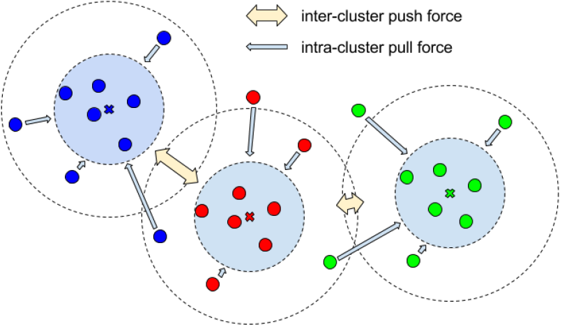
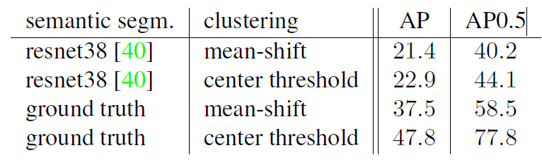

文章标题：Semantic Instance Segmentation with a Discriminative Loss Function
文章链接：https://arxiv.org/abs/1708.02551
发表时间：2017-08
对于实例分方法，目前存在着两种主流方法，一种是自上而下的先获取边界框，后进行二分类的方法了；另一种是先进行语义分割，后进行聚类的方法，本文就是属于后者。
本文是第一个成功地使用基于距离度量学习原理的区别性损失来完成深度网络实例分割任务的。具体来说，本文设计了一种Loss函数，它将像素空间到高纬度空间（嵌入空间）的映射。使得同类（同实例）物体中的像素映射到高维空间后，得到的embedding vector之间的距离（L1、L2距离）相近，从而使用聚类的方式完成分割任务。
【 Loss 函数的三个约束】
【约束1】. 方差项: 每个特征像素在被映射到嵌入空间，应该尽量的区域均值，也就是同类之间的方差要小。
【约束2】. 距离项: 每个不同类别均值之间的距离应该尽量的大。
【约束3】. 正则化约束: 让所有特征像素在嵌入空间中的值尽量的靠近原点。
图中蓝色箭头表示了特征空间中的相互接近，而用黄色箭头表示了之间的相互排除。

本文所提出的内容主要是损失函数，适用于通用的语义分割网络。下文主要从它的损失函数进行介绍。
以上三个约束，分别对应了下文的三个损失项，其中 和 分别是方差损失和距离损失。注意，在方差\delta_v内的点不在受到【约束1】，两个类的均值区间大于不在受到【约束2】
以城市景观为例。1行与第3行对比表示语义分割的质量对聚类性能有很大的影响。第1行比第2行和第3行比第4行:聚类方法的效果不太明显，但也有改进的空间。 